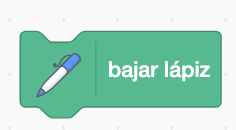
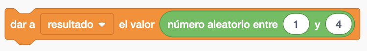
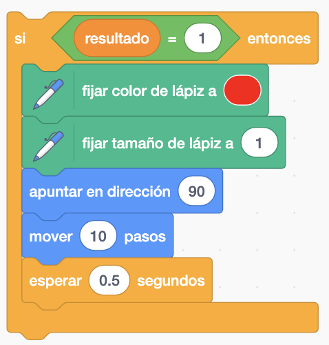
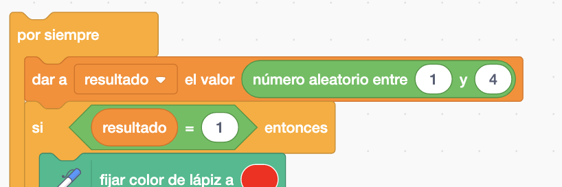
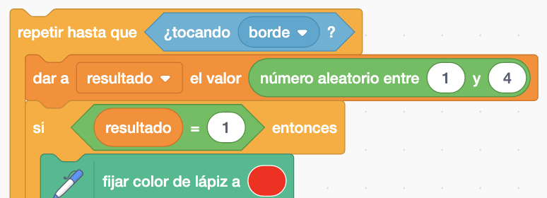

Seleccionamos un personaje de la biblioteca del Scratch.
No necesitamos ninguno.
El juego consiste en que el personaje se movera aleatoriamente continuamente y utilizara la extensión de lápiz para ir dibujando una línea. El color y el grosor del lápiz cambiará antes de modificar su dirección y mover pasos.


La Extensión del Lapiz está en la parte inferior izquierda de Scratch.
Seleccionamos el personaje que queramos y lo p6sosicionamos en el centro del escenario. Y lo ponemos mirando hacia la derecha para que se quede bien posicionado.

Borramos todo para limpiar todas las líneas el escenario por si hubieramos ejecutado anteriormente.

Usamos "bajar lápiz" para que pintar.

Creamos una variable que se llame "resultado" donde guardaremos un número a la que se dirigira el personaje mediante un bloque de "número aleatorio" entre 1 y 4.

Si el resultado es 1 cambiaremos el color, el tamaño del lapiz. Y apuntará a la derecha y moverá pasos. Pondremos un "esperar" para que no lo pinte muy rápido.

Tenemos que hacer que lo haga por siempre para que el personaje se mueva. Le pondremos un "por siempre".

Una vez que veamos que funciona correctamente vamos a sustituir el "por siempre" por el "repetir hasta que" el personaje toque el borde.

Y el juego quedaría así.
Para ver el juego terminado pulsa
aquí.
Para descargarte el juego terminado pulsa
aquí.